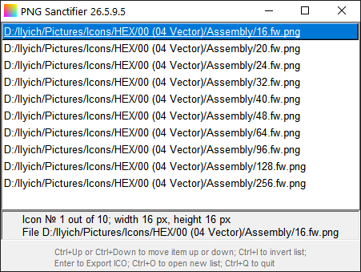
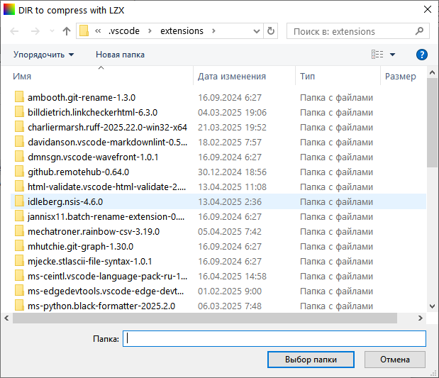
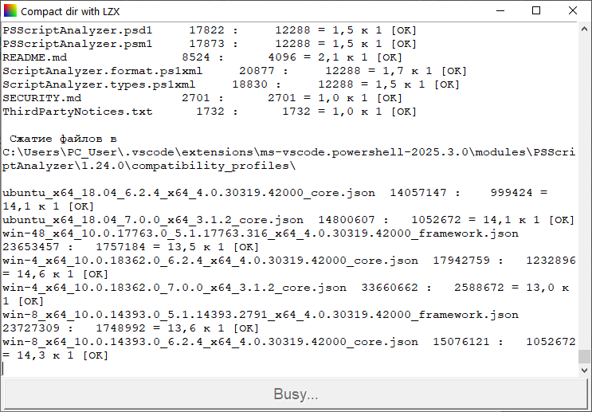

The Toad's Batchroom
Useful Python scripts for every day
The Toad's Batchroom repository includes various Python scripts for batch processing. Total number of files varies over time.
Good news everyone: new program added, named Sanctifier. As can be easily guessed from its name, this program is intended for converting a set of PNG files into a single Windows Icon (.ICO) file containing multiple icons of different sizes. Multiple image single compressed ICO files thus obtained are suitable for different purposes, from adding icons to your programs (which is of special interest for Python developers due to lack of native icon building tools) to assigning meaningful and recognizable icons to your personal folders via desktop.ini.
PNG Sanctifier: a PNG to multisize ICO converter (click for details)
Surely you can use GIMP to open a bunch of PNGs as layers, then export resulting image as an icon. Unfortunately, it means that GIMP really opens an image, and then saves it, that is, first decompresses, then compresses image using GIMP general purpose compression library, which is definitely not the best in terms of compression efficiency.
The main idea, and a sole reason for Sanctifier development, is that this program does not open images at all. Instead, it transfers PNG data, already compressed, into Windows ICO skeleton "as is". This allows using efficient PNG optimizers before assembling icons, and then building icons that retain the best compression possible.
Suggested workflow is as following:
- Create a set of images (according to Microsoft "Icons (Design basics): Size requirements", 16, 32, 48 and 256 pixel sizes seem to form a minimal set, although adding 20, 24, 40, 64 and 96 px is often recommended), and save a copies of your images as PNG files in one folder.
- Run a PNG optimizer on these files. I personally recommend oxipng - beside being quite efficient yet very fast, it exhibits the most important feature - it doesn't pretend to be smarter than me. That is, it doesn't try to change my PNGs color type, reduce color number, remove RGB signal from transparent areas, etc., unless I specifically tell it to do so. Something like "oxipng --opt max --strip all --filters 9 --nx --zopfli --zi 150 *.png" will perfectly compress all the PNGs in a folder intended to construct ICO from, without destroying subtle details you probably spent hours working on.
- Once your source PNGs look perfect and are compressed as much as possible, start Sanctifier.py. Immediately a file "Open" dialog, allowing multiple file selection, will pop up. Browse for a folder mentioned above, and select all PNG files intended to be used for icon construction at once.

- If necessary, change icon images order by changing file order in file list by selecting a file name and pressing Ctrl+Up or Ctrl+Down to move selected item up or down; Ctrl+I fully inverts the list order.
- Once satisfied with file list order, press Enter; standard file "Save as" dialog will pop up. Use it to save your icon.
- If you feel like assembling one more icon, press Ctrl+O to open new file list.
- Once finished, don't forget to prevent global warming, and exit Sanctifier by pressing Ctrl+Q or Ctrl+W.
According to my test results, oxipng gives up to 10% savings for photo-like 256×256 px PNGs; for geometrical drawings savings are unpredictable because PNG compression is especially efficient.
For a small images, like 16×16 px, compression benefit is expected to be smaller, but total size benefit of ca. 5% for a whole .ICO file may be counted on.
Ok, that's the end of our scientists report on "Sanctifier".
Let's go back to old frequently used and thoroughly checked scripts.
Most useful ones appeared to be:
- dir LibreOffice rtf2docx - batch conversion of .rtf, .doc, .odt and .fb2 files to .docx using LibreOffice. Overcomes clumsy LibreOffice ideas like starting several instances, or exporting all files into one dir, or something. Surely may be modified for batch conversion of not only rtf to docx (that was it's initial purpose) but also anything LibreOffice can read into anything it can write, like doc to PDF etc.
- dir ffmpeg flac2ogg 48 - converts all .flac within dir and subdirs to .ogg 48 kHz, using FFMPEG; removes junk like preview and «Zdes' byl Vasya» comments.
- dir ffmpeg flac2ogg 44 - converts all .flac within dir and subdirs to 16-bit 44.1 kHz (CD quality) .ogg, using FFMPEG; removes junk.
- dir OPTIVORBIS ogg - recompress all .ogg files within dir and subdirs, using OPTIVORBIS; saves up to 10 % of .ogg size after ffmpeg.
- dir COMPACT LZX - suitable GUI to Microsoft compact.exe, allowing to compress dir and subdirs using LZX compression (supported since Windows 8); modern bloatware typically get compressed 2.5-2.7 : 1, sometimes 3 : 1. Well, actually it's an example of redirecting compact.exe console output via subprocess Popen pipe to Tkinter ScrolledText ;-)
- dir AdvZIP docx - recompressing .docx after dir LibreOffice rtf2docx gives up to 7 % space saving.
- dir RENAME untranslit - intended for Russian users. Программа для оптового переименования (batch renaming) файлов с латиницы на русский (кириллицу). Не соответствует ISO 9, поскольку ISO 9 всё равно никто не использует, кроме как на федеральной службе; словари переименования составлены на основе того, с чем я лично сталкиваюсь, и периодически пополняются после новых столкновений. Словари (их три, средний для дифтонгов, предыдущий для более заковыристых, последний для отдельных букв) далеки от идеала (например, не умеют вставлять мягкие знаки после согласных там, где нужно), так что смело редактируйте, и не забывайте поделиться полезными комбинациями. И да, нет, не всё - будьте крайне осторожны, не направляйте эту программу на директории типа Windows или Program Files. Всё она, конечно, не переименует, но многое успеет...
- dir RENAME unflibusta - batch renaming of files according to patterns, like replacing underscores with spaces, removing digits, and so on. Edit rules pattern to your need.
Note that programs dir COMPACT LZX, dir OPTIVORBIS ogg, dir ffmpeg flac2ogg 48 and dir ffmpeg flac2ogg 44 accept command line arguments at start time. Argument is supposed to be a name of folder; in this case program GUI opens right in this folder. If argument happen to be a file, GUI will be opened in folder containing it. You may use it for creating shortcuts like:
pythonw.exe "dir COMPACT LZX.py" "%1"
(using actual addresses of Python and script on your system, of course) and then simply drag-and-drop folders onto shortcut to open program right where you need it. If argument is absent (e.g., you just double-click program), program simply opens in default directory and wait for you to browse and point to required location.


Note that since these batch scripts are made for my personal use, they are spontaneously updated without notification.
Warning: most of scripts, automating external .exe programs, are expecting the corresponding exe to be somewhere in PATH, just because that's the way I use them on my system. If you prefer to organize your system in a different manner, scripts may fail finding the exe necessary. Remember that these scripts are distributed under unlicense, so simply edit them to change the exe path. Just open any script with any text editor, search for the name of exe used (not surprisingly, scripts for ffmpeg are using ffmpeg.exe, and so on), and change the location.
Proceed to Batchfiles at GitHub for downloads...
...or Move back to Dnyarri`s Python freeware main page.